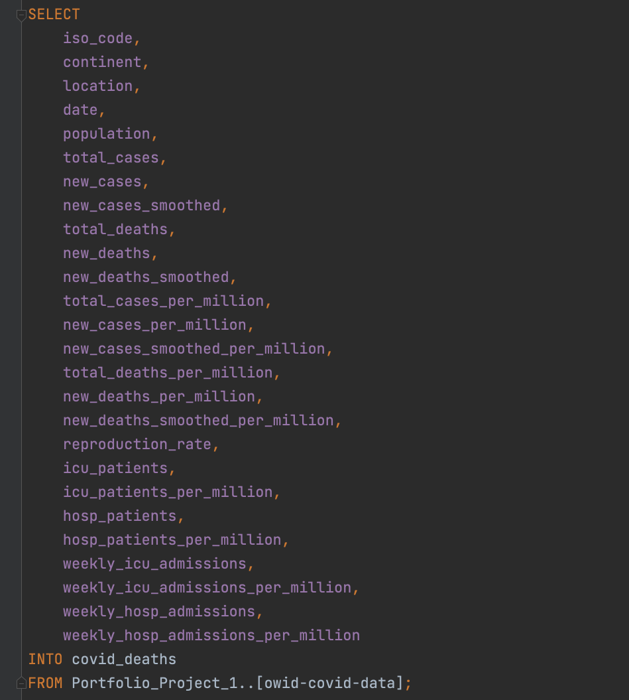

Preparing the Data
There are 67 attributes in this dataset and the way Alex handles the data is different from how I decided to do it. In his video Alex suggests opening the CSV in Excel and essentially splitting the data into two sub sets (as Excel files) which roughly speak to covid deaths and vaccinations respectively. I am not sure why, but I personally had some issues with modifying the data in this manner since the total amount of records should have technically remained at ~156k at the time while after splitting I was only seeing about half that amount. After multiple tries without success I ultimately decided to work around this by importing the entire dataset first and then splitting the set within SQL instead.
As a Windows user Alex uses MS-SQL Server Management Studio to import (and work with) the data however as Mac users we will have to use an alternative such as Azure Data Studio, or DataGrip etc. In any case please make sure you double-check that the suggested data types for each attribute is appropriate upon importation (example below). Also note that many of the attributes have missing data so Null values will need to be allowed.

For the imported data I assigned the name "owid-covid-data". The next step will be to create two sub tables with the same attributes as Alex's two split excel sheets. The first sub-table can be called "covid_deaths":

The next table that we need to create, called "covid vaccinations", can be created in a similar fashion except this time we can clone the main imported table and then trim it down to what we need by dropping specfic columns:
A more detailed set of the code referenced above can be found on my github page (see here).
Now we can move onto the next step in which we do some analysis of this data directly using SQL itself.